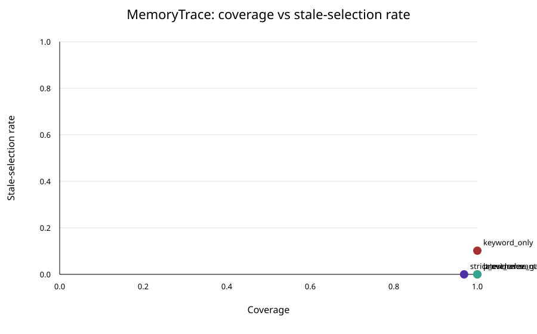

Research benchmark · Agentic AI · 28 October 2026
MemoryTrace: Measuring Evidence-Aware Memory Retrieval in Agentic Workflows
Muzammal Hussain · Synthetic benchmark · 28 October 2026
An AI assistant can retrieve a note that looks relevant but is stale, weakly sourced, or retained without consent. MemoryTrace tests four retrieval policies in a deterministic synthetic benchmark, measuring answer coverage alongside incorrect, stale, unsupported and non-consensual selections.
Key findings
- Across 600 synthetic scenarios,
keyword_onlyachieved 16.17% correct answers, whileprovenance_gateachieved 37.17%. latest_relevantselected non-consensual records in 17.00% of scenarios and unsupported records in 52.17%.provenance_gatereported zero stale, unsupported and non-consensual selections in this simulator, with 100% coverage.strict_evidencereported 96.83% coverage and 36.00% correct answers across all scenarios.
Research question
How much do provenance, freshness and consent gates change the trade-off between answer coverage and unsafe memory use in a multi-step assistant workflow?
Method
A deterministic generator creates 600 scenarios with six candidate memory records each: a potentially verified current record, a stale archive, a recent unverified record, a non-consensual note, a lexical distractor, and an authentic but conflicting record. Four policies select a candidate or abstain. The benchmark uses Python's standard library and writes reproducible CSV and JSON outputs.

Results
| Policy | Coverage | Correct, all scenarios | Stale | Unsupported | Non-consensual |
|---|---|---|---|---|---|
keyword_only | 100.00% | 16.17% | 10.17% | 56.50% | 1.67% |
latest_relevant | 100.00% | 21.33% | 0.00% | 52.17% | 17.00% |
provenance_gate | 100.00% | 37.17% | 0.00% | 0.00% | 0.00% |
strict_evidence | 96.83% | 36.00% | 0.00% | 0.00% | 0.00% |
These figures are deterministic outputs of a synthetic simulator, not estimates of real-world agent performance. The simulator exposes evidence and consent labels to policies; the zero-risk results therefore reflect the experiment design and do not establish that a deployed system would be risk-free.
Limitations and next steps
The scenario distribution is hand-designed and may favour policies whose assumptions match it. Authenticity does not guarantee that a record's claim is correct, and a synthetic retrieval score is not a measure of an LLM's semantic understanding. The experiment does not establish safety, privacy compliance or generalisation to real users.
A stronger follow-up would test multiple real models, preregister scenario families, report uncertainty intervals, and include adversarial cases with missing or forged metadata. Real-system evaluations should also document how provenance and consent are established and enforced.
Reproducibility
The benchmark uses generated data and Python's standard library; it does not use user data or an external corpus. The repository includes tests, dataset documentation, references and plotting code.
git clone https://github.com/MHKhan50/memorytrace-agent-evidence-benchmark.git
cd memorytrace-agent-evidence-benchmark
python3 run_benchmark.py
python3 -m unittest discover -s tests -vView the MemoryTrace code, dataset and documentation on GitHub.